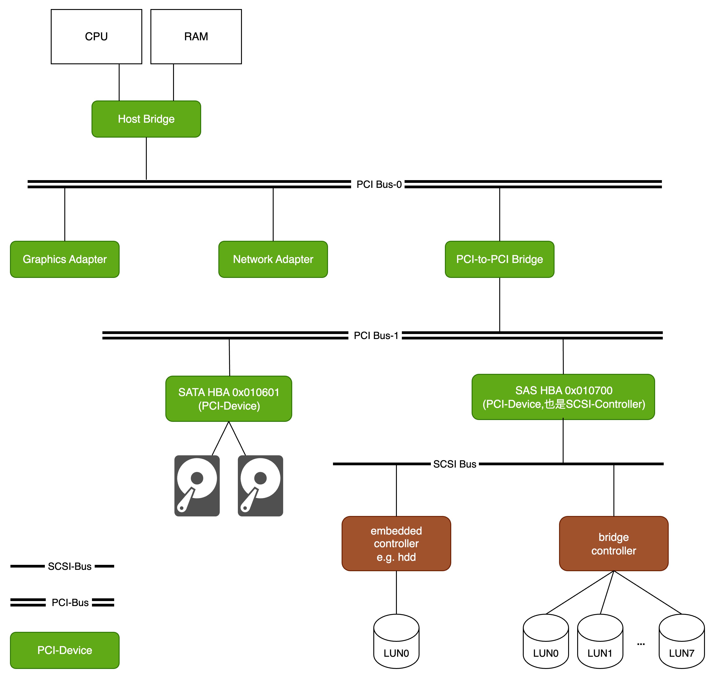
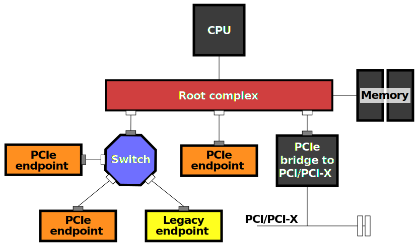
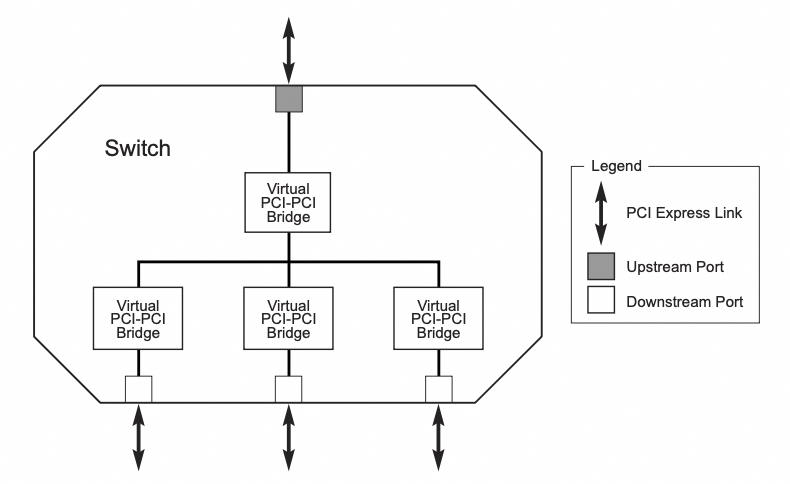
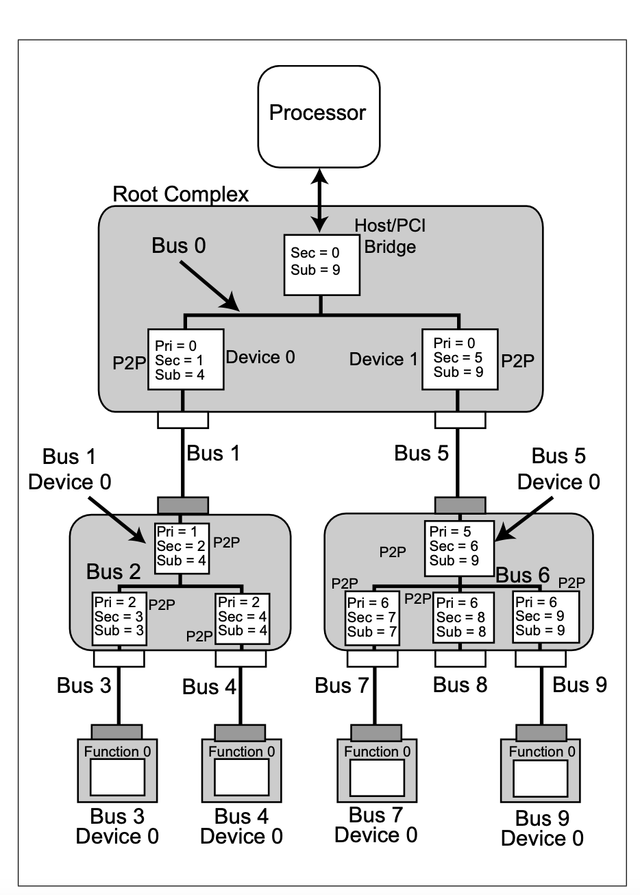
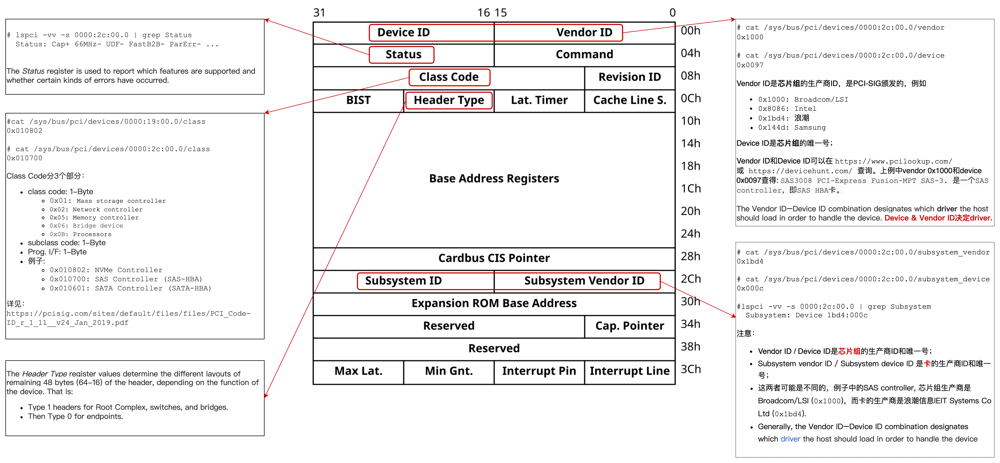
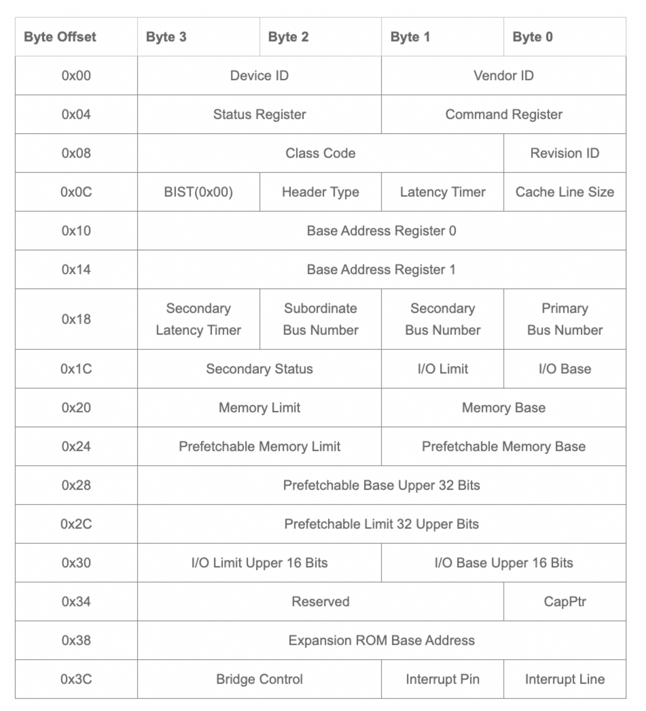
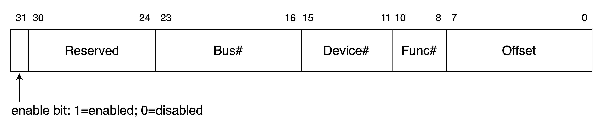
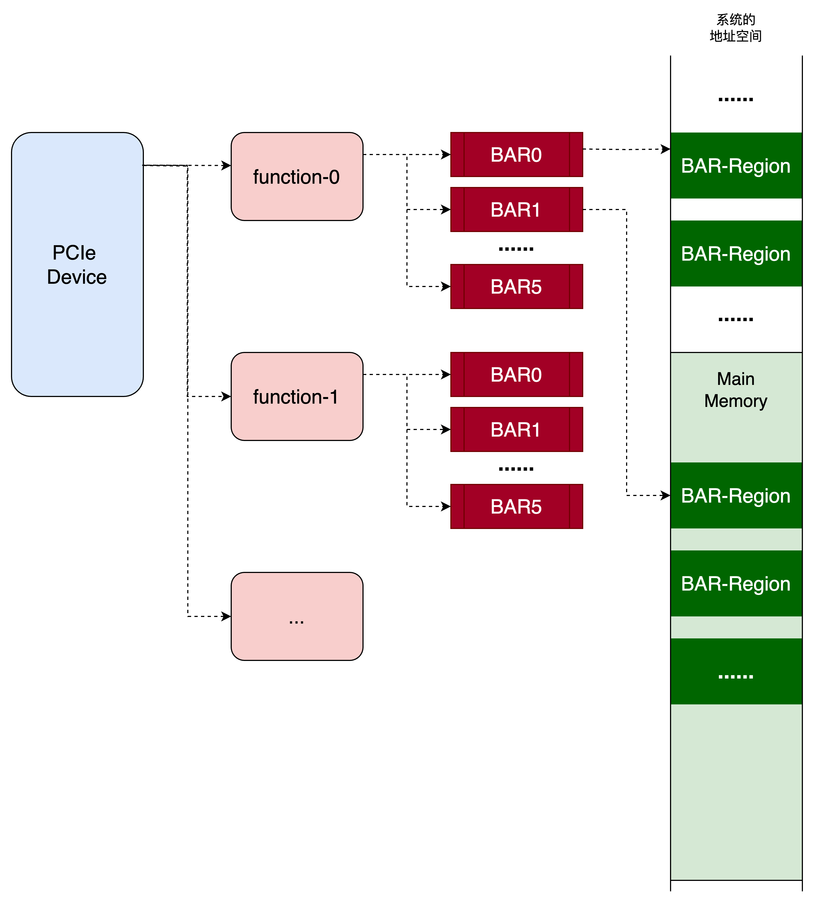
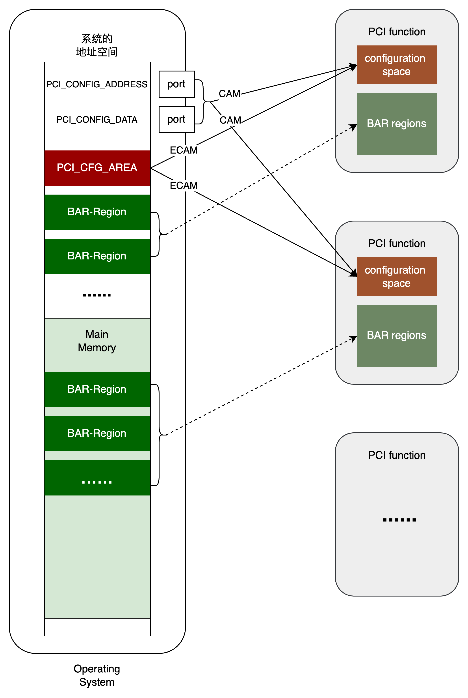
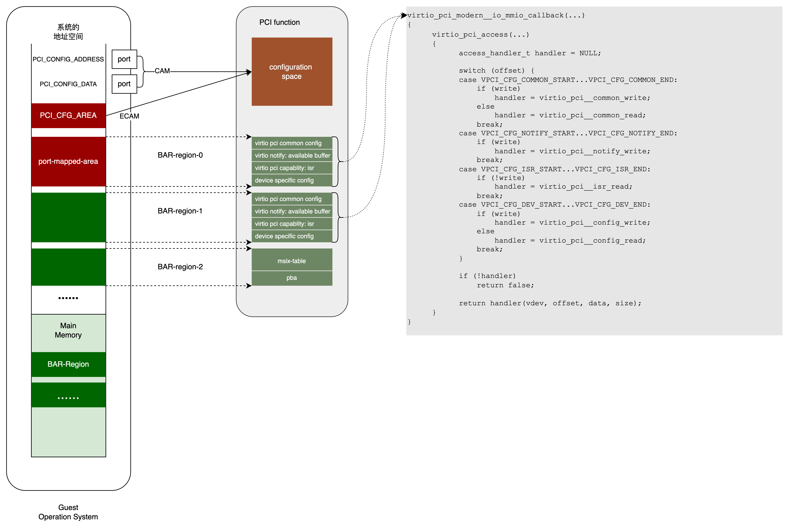

Kvmtool可以认为是一个极简版的qemu (所处软件层、功能都和qemu一样)，只有几千行代码，便于学习虚拟化的原理。本文先简单回顾物理环境下PCI/PCIe基础，然后看kvmtool中是如何模拟PCI/PCIe的。
PCI/PCIe回顾 (1)
PCI (1.1)

- A tree structure of interconnected I/O buses is supported through a series of PCI bus bridges.
- Every PCI device has a unique VendorID and DeviceID. The VendorID-DeviceID combination designates which driver the host should load in order to handle the device.
- Multiple devices of the same kind are further identified by their unique device numbers on the bus where they reside.
- Each PCI peripheral is identified by a bus number, a device number, and a function number. The PCI specification permits a single system to host up to 256 buses, but because 256 buses are not sufficient for many large systems, Linux now supports PCI domains. Each PCI domain can host up to 256 buses. Each bus hosts up to 32 devices, and each device can be a multifunction board (with a maximum of eight functions), such as an audio device with an accompanying CD-ROM drive (这可能是function一词的由来), a single PCI network card could have two logically separate NICs (这里2个function相同). Therefore, each function can be identified at hardware level by a 16-bit address, or key.
- domain : 16-bit，一般为0，好多地方都省略，起码我见过的服务器上全是0000
- bus : 8-bit
- device : 5-bit
- function : 3-bit
- 对操作系统来说，function就是独立的PCI硬件设备，由domain:bus:device.function唯一定位。可以理解为一张物理卡(设备)上包含多个PCI设备。后文说一个PCI设备多数是指一个function。
- Typical PCI devices:
- Bridges: Host/North Bridge (class=0x060000), PCI-to-PCI bridge (class=0x060400)
- HBA: SATA controller (class=0x010601), SAS controller (class=0x010700)
- Network Adapter (class=0x020000)
- and so on.
- 引用维基百科PCIe：Similar to a host bridge in a PCI system, the root complex generates transaction requests on behalf of the CPU … 所以在PCI系统中，host bridge负责生成transaction requests (TLP: Transaction Layer Packet).
PCIe (1.2)

和PCI相比，PCIe的系统结构发生了很大变化。摘自维基百科：Conceptually, the PCI-Express bus is a high-speed serial replacement of the older PCI/PCI-X bus. One of the key differences between the PCI-Express bus and the older PCI is the bus topology; PCI uses a shared parallel bus architecture, in which the PCI host and all devices share a common set of address, data, and control lines. In contrast, PCI Express is based on point-to-point topology, with separate serial links connecting every device to the root complex (host). 就是说，PCIe是点对点的。每个PCI device和root complex之间是独立的serial link，而不是共享的bus。
PCI device是通过switch连到root complex的，所以switch内部各个port到root complex的连线是独立的，如下图所示：

可见，switch就是若干internel bus和若干PCI-to-PCI bridge的组合。所谓point-to-point topology，是不是使用更多的internal bus和PCI-to-PCI bridge让每个PCI设备都有单独的link？另外，在真实服务器上使用lspci -vv命令查看发现bus number并不连续，是不是因为”internal bus”的number看不到？

从这个图可以看出:
- root complex和switch的内部结构一样：也是internel bus和PCI-to-PCI bridge的组合。不过root complex还有别的组件和功能。
- 只不过upstream bridge就是host bridge；
摘自维基百科：
Similar to a host bridge in a PCI system, the root complex generates transaction requests on behalf of the CPU, which is interconnected through a local bus. Root complex functionality may be integrated in the chipset and/or the CPU. A root complex may contain more than one PCI Express port and multiple switch devices can be connected to ports on the root complex or cascaded.
- root complex可能在主板上或者CPU内部;
- root complex负责生成transaction requests (TLP: Transaction Layer Packet); 每个PCI-to-PCI bridge和PCI endpoint设备通过memory-mapping和(或)port-mapping对应一些地址空间。这些地址空间不是main memory的地址空间(可能掩盖了对应main memory空间，也可能和main memory的空间不重合)。当CPU访问这些地址时，root complex生成transaction requests，发给对应设备处理。对配置IO Port(0xCF8和0xCFC)的读写应该也由root complex处理生成配置请求。
摘自PCIe Specification:
- host bridge: Part of a Root Complex that connects a host CPU or CPUs to a Hierarchy.
- root complex:
- A defined System Element that includes at least one Host Bridge, Root Port, or Root Complex Integrated Endpoint. 一个root complex可以包含多个host bridges.
- denotes the root of an I/O hierarchy that connects the CPU/memory subsystem to the I/O.
- may support one or more PCI Express Ports. Each interface defines a separate hierarchy domain. Each hierarchy domain may be composed of a single Endpoint or a sub-hierarchy containing one or more Switch components and Endpoints.
- must support generation of configuration requests as a Requester.
- is permitted to support the generation of I/O Requests as a Requester.
总结：
- PCIe是一个point-to-point的网络，类似于以太网；switch也可类比以太网交换机；
- Switch有多个port，其中一个是upstream port，其它是downstream port。每个port对应一个PCI-to-PCI bridge。PCI-to-PCI bridge有自己的type-1 configuration space；必须对所有upstream/downstream bridge进行program（设置它的configuration space），然后switch才能工作，为连接在它上面的下游PCI设备转发TLP memory packets。下游PCI设备可能是endpoint device，也可能是其它switch.
- Switch有内部bus，连接多个port；
- 逻辑上看，和PCI总线结构是等价的；但point-to-point结构性能更好，因为bus是独占的，不需要arbitration.
Configuration Space (1.3)
每个BDF (bus:device.function)定位的PCI function都有一组寄存器，叫做configuration space. 后文也把PCI function叫做PCI设备，因为它是操作系统OS眼中的PCI设备。要使用PCI设备，BIOS或OS必须首先enumerate PCI设备(包括bridge和endpoint)并对它们进行编程(即设置这些寄存器)。PCI的configuration space是256字节，PCIe是4096字节，它们的header是相同的。但Non-bridge设备(即endpoint设备)和bridge设备的configuration space的header不同，见图5和图6。

Configuration space header是64字节；PCI设备有192字节的额外空间，存储capabilities列表。
PCI Express introduced an extended configuration space, up to 4096 bytes. The only standardized part of extended configuration space is the first four bytes at 0x100 which are the start of an extended capability list. 也就是说前256字节和PCI一样。从第256字节(0x100)开始的4字节是标准化的，后面的部分(4096-256-4=3836B)都是扩展的。
Configuration space header中有一类重要寄存器叫做BAR: Base Address Register. Type-0 (Non-Bridge) configuration space中有6个BAR; Type-1 (Bridge) configuration space中有2个BAR.
前面说root complex的时候提到，每个PCI设备(包括bridge和endpoint)都对应一些地址空间，当CPU访问这些地址时root complex就生成transaction requests (TLP)发给对应设备处理。其中地址空间叫做BAR region，是由BAR寄存器指定的，即BAR寄存器存储BAR region的base address和size。一个BAR指定一个BAR region。所以non-bridge (endpoint)设备至多可以使用6个BAR region；bridge设备至多可以使用2个BAR region。
The CPU can read and write to that BAR region to talk to the PCIe device. When you read or write to offsets within the BAR region, TLP packets are sent back and forth between the CPU/memory and the PCIe device, which tells the PCIe device to do something or send something back.
Such reads and writes are the main way in which drivers interact with PCIe devices. What reads and writes to specific addresses mean is defined by each specific PCIe device and completely device dependant, but typically:
- reads return status information such as:
- what the device is currently doing, or how much work it has done so far
- how the device has been configured
- writes:
- configure how the device should operate
- tell the device to start doing some work, e.g. write to disk, render a frame on the GPU, or send a packet over the network.
A very common pattern in which such operations happen is:
- CPU writes input to RAM;
- CPU tells the device where the input data is in RAM, and where the output should go to (RAM address or some special memory like Video memory for GPU rendering);
- device reads input data from main memory via DMA. Again, more TLP packets;
- device does some work;
- device writes output data back to main memory via DMA;
- device sends an interrupt to tell the CPU it finished its work;
BAR寄存器存储BAR region的base address和size。在物理机环境下，BIOS或OS探测到region的大小之后(探测方法见下文)，就分配空间，再把分配的空间的base address写入BAR中。但在kvmtool中BAR region的size是写死的，base address也是是由kvmtool(VMM: VM Monitor)直接分配的，而不是由guest BIOS/OS分配的(这也符合协议吗?)。
若这些地址空间与main memory的地址空间重合，就掩盖了main memory空间(CPU访问不到这些main memory；相当于失去了这块main memory)；也可能和main memory的地址空间不重合。
另外，每个BAR region可以是memory-mapped，也可以是port-mapped。对于前者，CPU像访问main memory一样使用mov这样的指令去读写；对于后者，CPU使用单独的in, out指令去访问。
其他寄存器：
- Status：PCI_STATUS_CAP_LIST(0x10)位表示是否支持Capability List;
- Cap.Pointer：第一个capability的offset；例如若第一个capability紧挨着header(第64字节处)，Cap.Pointer = 64；

Type-1 (Bridge) Configuration Space中只有2个BAR寄存器。
读写Configuration Space (1.4)
BIOS/OS有两种方式读写Configuration Space:
Configuration Access Mechanism (CAM)
BIOS/OS通过PCI_CONFIG_ADDRESS和PCI_CONFIG_DATA这两个port读写所有PCI function的所有configuration space寄存器，包括endpoint设备、PCI-to-PCI bridge。PCI_CONFIG_ADDRESS和PCI_CONFIG_DATA是PCI specification定义的，所以值是固定的，分别是0xCF8和0xCFC。具体地，
- 先往
PCI_CONFIG_ADDRESS写入目标寄存器的地址。因为目标寄存器可能是任何PCI function的任何寄存器，所以地址必须包含Bus#, Device#, Function#以及offset. 其中offset是在configuration space内的偏移，以byte为单位；若舍弃offset的最后2bit，则刚好得到Register#，因为每个Register是4字节。

- 然后读写
PCI_CONFIG_DATA，就是读写目标寄存器。
Enhanced Configuration Access Mechanism (ECAM)
摘自维基百科：The second method was created for PCI Express. It is called Enhanced Configuration Access Mechanism (ECAM). It extends device’s configuration space to 4 KB, with the bottom 256 bytes overlapping the original (legacy) configuration space in PCI. The section of the addressable space is “stolen” so that the accesses from the CPU don’t go to memory but rather reach a given device. During system initialization, BIOS determines the base address for this “stolen” address region and communicates it to the root complex and to the operating system.
就是说，把PCIe设备的4KB configuration space直接memory map到main memory地址空间；main memory的这段空间被掩盖(stolen)：CPU对这段空间的访问被root complex转换成对PCI configuration space的读写。
Bus Enumeration (1.5)
Bus enumeration是通过CAM(PCI_CONFIG_ADDRESS和PCI_CONFIG_DATA)完成的。
引用维基百科：
When the computer is powered on, the PCI bus(es) and device(s) must be enumerated by BIOS or operating system. Bus enumeration is performed by attempting to access the PCI configuration space registers for each buses, devices and functions. Note that device number, different from VID and DID, is merely a device’s sequential number on that bus. Moreover, after a new bridge is detected, a new bus number is defined, and device enumeration restarts at device number zero.
If no response is received from the device’s function #0, the bus master performs an abort and returns an all-bits-on value (FFFFFFFF in hexadecimal), which is an invalid VID/DID value, thus the BIOS or operating system can tell that the specified combination bus/device_number/function (B/D/F) is not present. In this case, reads to the remaining functions numbers (1–7) are not necessary as they also will not exist.
BIOS/OS遍历各个bus以及bus上的slot；同时顺序分配bus#和device# (即从bus0开始，bus1，bus2，…；对于每个bus，从device0开始，以此…)。对于一个bus上的一个slot，当前分配到busX, deviceY:
- 往
PCI_CONFIG_ADDRESS写入0x80000000 | busX << 16 | deviceY << 11 | function#=0 | offset=0; - 读
PCI_CONFIG_DATA;
若slot上没有设备，读到将是0xFFFFFFFF(非法VendorID/DeviceID)，继续下一个slot … 若slot上有设备(设备必须有function0，PCI规范要求的)，它就会响应，返回自己的VendorID/DeviceID，表示扫描到一个PCI设备，这个PCI设备也就被分配到busX:deviceY；它若有多个function, function#分别是0, 1, 2, … 它也可能是一个PCI-to-PCI bridge，这样就产生一个新的bus，再对新bus进行enumerate …
这里有一个问题：slot上的设备如何决定自己要不要响应呢？这时设备还没有分配bus#和devcie#，当然更不知道自己是不是busX:deviceY。这不是”鸡生蛋-蛋生鸡”的问题吗？答：这是硬件实现的。设备决定是否响应，不是看busX:deviceY是否指向自己，而是靠物理信号Initialization Device Select (IDSEL)。应该是此时硬件保证只有这个slot的IDSEL被点亮。被点亮的设备只解析0-10bit，看目标是哪个function的哪个register，根本不会解析bus#和device#，更不会依靠bus#和device#判断是否是给自己的请求。不止Bus enumeration时，以后任何对configuration space register的访问，设备都不是看bus#:device#是否指向自己，都是靠IDSEL信号。
但是在kvmtool虚拟环境中，确实是靠bus#:device#来判断如何响应guest BIOS/OS的。并且，kvmtool只模拟了一条bus，所以只靠device#判断：模拟PCI设备时，直接给它分配了device#；guest BIOS/OS进行bus enumeration时，kvmtool查看device#是否存在，决定是回复对应设备的VendorID/DeviceID还是0xFFFFFFFF。
配置BAR (1.6)
Bus Enumeration之后就知道系统上连接了哪些PCI设备(PCI function)，然后就要对它们进行配置，即使用CAM或者ECAM(见第1.4节)对configuration space的寄存器进行读写。这里简单说一下对BAR寄存器的配置。前面说过，一个BAR描述一个BAR region(存储region的base address和size)；CPU对这个region的读写被root complex转换成对PCI设备的读写请求(TLP)。所以配置BAR很重要。

第一个工作就是探测BAR region的size。规范要求region size最小16B，最大2MiB，且必须为2的幂次；另外，base address必须对齐到size的整数倍。所以若region size是2^N，那么base address的最低N位一定为0(N>=4)。BAR寄存器就是存base address的，所以最低N位一定为0。既然一定为0，硬件上就设计为不可写。探测时，先往BAR中写0xFFFFFFFF。因为最低N位不可写，所以只有前面32-N位被写成1。这时读回BAR，假设是1...10...0000(二进制)，看末尾有多少位0，就得到N，也就得到了region size。实现中，最低4位是reserved，但这不影响探测逻辑：读回的BAR是1...10...xxxx(二进制)，把最低4位看作0就可以了。
例如，往一个BAR写入0xFFFFFFFF之后再读回，得到0xFFFFF00X(X代表reserved的最低4-bit)，就知道BAR region为4K.
Reserved最低4-bit：
- 0 (Region Type)
- 0 = memory-mapped
- 1 = IO port-mapped
- 1-2 (Locatable)
- 0 = any 32-bit
- 1 = less than 1 MiB
- 2 = any 64-bit (即支持BAR region在4G以上的空间中；如何表示64位呢?)
- 3 (Prefetchable)
- 0 = no
- 1 = yes
有了BAR region size (以及最低4-bit)，BIOS/OS分配对齐的地址空间，写到BAR。
注意：在上述过程中，假如使用CAM方式，一次寄存器读写都是通过两次IO完成的：先写PCI_CONFIG_ADDRESS，再读写PCI_CONFIG_DATA。
在kvmtool中BAR region的size是写死的，base address也是是由kvmtool(VMM: VM Monitor)直接分配的，而不是由guest BIOS/OS分配的(这也符合协议吗?)。所以，探测size之前，需要把原来的BAR保存起来；探测完之后再恢复：
- read BAR (保存原值);
- write 0xFFFFFFFF to BAR;
- read BAR;
- write BAR (恢复原值);
从操作系统的角度看：

图中PCI设备的BAR regions不一定真实存在(只是OS眼中它们是存在的并且是可读写的)，对它们的读写被翻译成TLP。
kvmtool中的PCI (2)
对PCI的模拟主要在pci.c和virtio/pci.c两个文件中：
pci.c：
pci__init函数是模拟第1.4节所述的CAM (Configuration Access Mechanism)和ECAM (Enhanced Configuration Access Mechanism)。全局只调用一次。- CAM: 注册两个callback函数：
PCI_CONFIG_ADDRESS => pci_config_address_mmio以及PCI_CONFIG_DATA => pci_config_data_mmio。当guest BIOS/OS往PCI_CONFIG_ADDRESS写目标寄存器的地址(Bus#, Device#, Function#及configuration space的offset)时，就会触发pci_config_address_mmio函数。此函数把Bus#, Device#, Function#及offset保存到全局变量pci_config_address_bits中。当guest BIOS/OS读写PCI_CONFIG_DATA时，触发pci_config_data_mmio。此函数先根据pci_config_address_bits找到目标寄存器(特定device的特定function的configuration space的特定offset)，然后读写。Configuration space是内存空间模拟的(每个PCI function在kvmtool内存中都有一个struct pci_device_header结构体)，故读写都是memcpy，只是方向不同而已。若对应PCI设备(PCI function)不存在，读就返回对应长度的0xFF，写则do nothing； - ECAM: 注册一个callback函数：
KVM_PCI_CFG_AREA => pci_config_mmio_access。这个函数可以一次完成读写一个寄存器的操作。所起的作用和CAM机制相同，不赘述。KVM_PCI_CFG_AREA(0xD1000000)的值是如何确定的？On x86 and x64 platforms, ACPI(Advanced Configuration and Power Interface)有一个’MCFG’ table, table中有MMIO_Starting_Physical_Address，这就是base address of the ECAM region；有了base address，给定PCI function的给定register的address就等于MMIO_Starting_Physical_Address + ((Bus) << 20 | Device << 15 | Function << 12)。KVM_PCI_CFG_AREA就是MMIO_Starting_Physical_Address，对于x86而言，定义在x86/include/kvm/kvm-arch.h中。问题：guest BIOS/OS如何知道这个地址？
- CAM: 注册两个callback函数：
virtio/pci.c：
virtio_pci__init函数直接构造一个虚拟的PCI设备(PCI function)，故对于每个虚拟PCI设备调用一次。对于每个设备：- 直接分配PCI设备的device#: 从0开始递增。并且为了简单，kvmtool模拟的每个PCI设备只有一个function。PCI设备(PCI function)保存在全局列表
device_trees[DEVICE_BUS_PCI]中。前面说，PCI设备存在或者不存在，就是指能否在这个列表中找到device#匹配的(bus#肯定匹配，因为是拿自己和自己比较，相当于只有一条bus)； - 初始化3个BAR。直接定死每个BAR region的size，且直接分配region base address；IO port-mapped region从0x6200开始以此分配；memory-mapped region从0xD2000000依次分配；
- 为每个BAR region注册callback：guest访问到BAR region时，触发对应callback；
- 直接分配PCI设备的device#: 从0开始递增。并且为了简单，kvmtool模拟的每个PCI设备只有一个function。PCI设备(PCI function)保存在全局列表
PCI/PCIe是一个协议，不同类型的设备都可以通过这个协议来实现，例如网卡、HBA卡(SATA controller或者SAS controller)，只不过它们的操作不同(系统读写BAR region触发的操作不同)，实现的Capability不同，使用的BAR region数也可以不同。可以把virtio看作一个特殊的PCI设备(当然，virtio也可以通过mmio实现，此乃题外话)，所以它可以实现它独特的操作。在kvmtool中，virtio设备实现了4个capability(代码见virtio/pci-modern.c:virtio_pci_modern_init)：
- virtio通用配置读写；通用配置是指所有virtio设备，virtio-blk, virtio-net, … 都有的配置，例如配置vring地址和queue的中断；enable/disable queue等；
- 通知设备queue上有available buffer可以处理，即notify-capability；
- isr-capability；
- 设备相关的配置的读写，例如virtio-blk的capacity, cylinder/head/sector数；virtio-net的mac, mtu等。
这4个capability的实现在设备的configuration space里有反映，guest系统读了设备的configuration space之后，就知道可以使用设备的这些capability，所以就有了图10代码中的4个操作：

Virtio一个显著特点是通过virt-queue来传递请求(可以使用notify-capability机制通知virtio设备virt-queue上有available buffer可以处理，但更常见的是virtio设备直接poll virt-queue)；而真实PCI设备应该是通过对BAR-region的读写操作来触发请求(root complex把对BAR-region的读写操作翻译成TLP并在PCIe bus上发送)。在kvmtool中，启用的3个BAR-region都不是用于设备的读写请求。
在kvmtool中，PCI设备实现的比较统一、简单：每个设备都使用3个BAR。BAR-0和BAR-1功能一样(见上图10)，只不过一个是使用port map，另一个使用memory map；虽然map到的地址不同，但相同偏移触发的功能是一样的。BAR-2用于支持msix capability，详见kvmtool interrupt virtualization。
小结 (3)
回顾PCI在物理机中是如何工作的，明白这个机制之后，模拟工作(kvmtool)也就显而易见了。这为后面学习中断虚拟化、存储虚拟化做准备。